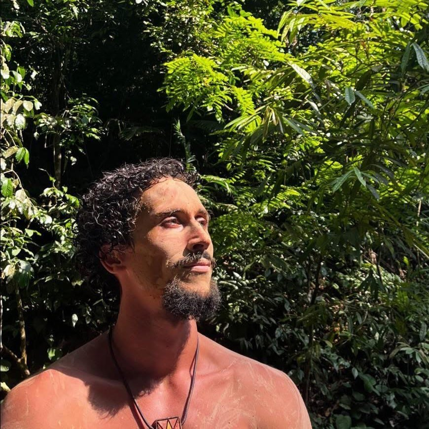
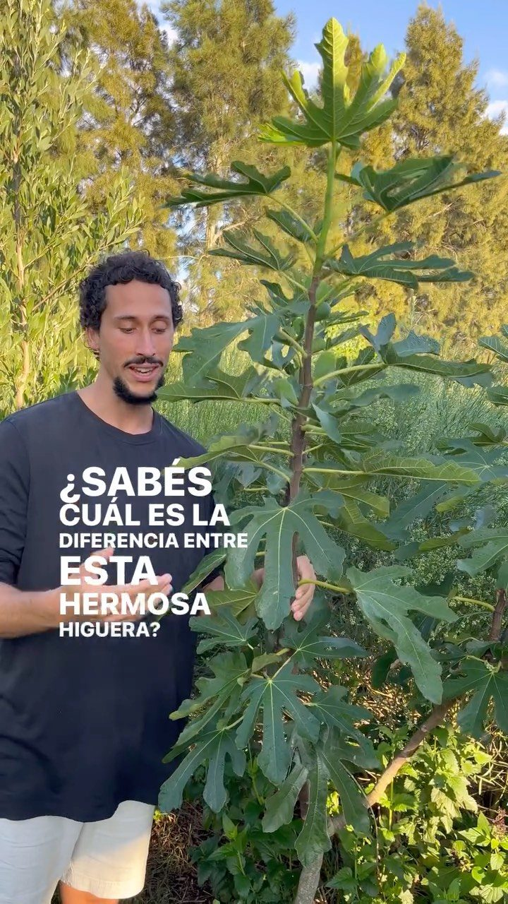

Poder personal
Dejar de vivir desde el miedo y la reacción para sostenerte en tu centro: decidir, poner límites y actuar desde tu verdad.
Acompaño a personas que sienten que están hechas para algo más profundo: un camino de refinamiento interior para vivir con presencia, fuerza y verdad.

Foto real de IntiEl camino que propongo
No es motivación pasajera. Es un trabajo de fondo para reencontrarte con tu fuerza, tu calma y tu manera de estar en el mundo.
Dejar de vivir desde el miedo y la reacción para sostenerte en tu centro: decidir, poner límites y actuar desde tu verdad.
Recuperar el ritmo natural, el cuerpo y los ciclos. Volver a una raíz que la vida moderna nos hizo olvidar.
El Templo del Refinamiento: pulir el carácter, los hábitos y la presencia hasta que tu vida se vuelva una obra cuidada.

La Escuela Ser
La Escuela Ser es la formación viva donde llevo todo esto a la práctica: prácticas, comunidad y acompañamiento para sostener el cambio en el tiempo, no en un fin de semana.
Si Instagram es la chispa, la Escuela es el fuego sostenido.
Una carta sencilla con una idea y una práctica para volver a tu centro. Sin ruido, directo a tu correo.
Te escribo yo, no un robot. Te das de baja cuando quieras.